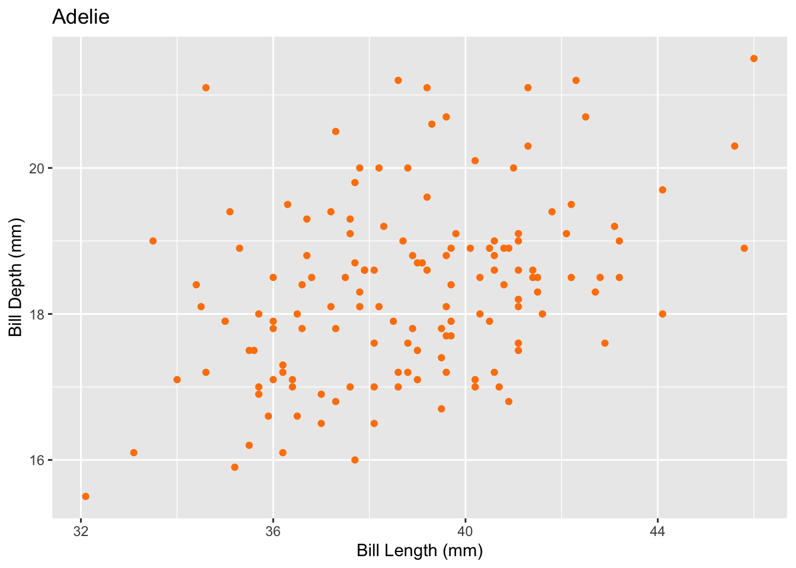

Code
library(tidyverse)
library(hrbrthemes) # ipsum theme for ggplot2 charts
library(patchwork)
library(DT)
library(knitr)
library(plotly)This Quarto document serves as a practical illustration and is designed primarily for educational purposes, so the focus is on demonstrating R tidyverse and Quarto techniques rather than on the rigor of its scientific content.
This R script is a result of an assignment and makes a simple analysis of variables bill_length_mm and bill_depth_mm from popular palmerpenguin dataset in R in several steps.

For this data analysis we will need next R packages: tidyverse, hrbrthemes, patchwork, DT, knitr and plotly
library(tidyverse)
library(hrbrthemes) # ipsum theme for ggplot2 charts
library(patchwork)
library(DT)
library(knitr)
library(plotly)The R code is by default blended. Click on the code button above to show it
Let’s load a clean data version, together with functions available in functions.R.
# Source functions
source(file="functions.R")
# Read the clean dataset
data <- readRDS("./../input/clean_data.rds")All source data, functions and outputs are contained within the R project and can be reproduced
Let’s use one of generic functions to see basic statistics on all data columns
summary(data) rowid species island bill_length_mm
Min. : 1.00 Length:338 Length:338 Min. :32.10
1st Qu.: 89.25 Class :character Class :character 1st Qu.:39.45
Median :174.50 Mode :character Mode :character Median :44.50
Mean :173.82 Mean :43.97
3rd Qu.:259.75 3rd Qu.:48.50
Max. :344.00 Max. :59.60
NA's :2
bill_depth_mm flipper_length_mm body_mass_g sex
Min. :13.10 Min. :172.0 Min. :2700 Length:338
1st Qu.:15.57 1st Qu.:190.0 1st Qu.:3550 Class :character
Median :17.30 Median :197.0 Median :4050 Mode :character
Mean :17.14 Mean :200.9 Mean :4203
3rd Qu.:18.62 3rd Qu.:213.2 3rd Qu.:4750
Max. :21.50 Max. :231.0 Max. :6300
NA's :2 NA's :2 NA's :2
year
Min. :2007
1st Qu.:2007
Median :2008
Mean :2008
3rd Qu.:2009
Max. :2009
Mean bill length for Adelie specie on different islands using dplyr
mean_bill_length <- data %>%
filter(species == "Adelie") %>%
group_by(island) %>%
summarize(mean_bill_length = num(mean(bill_length_mm, na.rm = TRUE), digits= 2))
kable(mean_bill_length)| island | mean_bill_length |
|---|---|
| Biscoe | 38.98 |
| Dream | 38.55 |
| Torgersen | 38.95 |
Plot mean bill length vs. mean bill depth for different species, 3 species combined on one graph.
p0 <- data %>%
na.omit() %>%
ggplot(aes(x = bill_length_mm, y = bill_depth_mm, color = species, shape = species)) + geom_point() +
labs(x = 'Bill Length (mm)', y = 'Bill Depth (mm)', title = 'Penguin Bill Dimensions') +
scale_shape_manual(values = c("Adelie" = 16, "Chinstrap" = 17, "Gentoo" = 18)) + scale_color_manual(values = c("Adelie" = "#ff8100",
"Chinstrap" = "#c25ecb",
"Gentoo" = "#056e75"))
p0 <- ggplotly(p0)
p0Relationship between bill length and bill depth. All data points included. It may seem that alltogether data resembles negative correlation between bill length and bill depth
Let’s use patchwork and our previously created and loaded scatterplot.f function to make 3 side-by-side scatterplots for separate species.
p1 <- scatterplot.f(data, "Adelie","#ff8100")
p2 <- scatterplot.f(data, "Chinstrap","#c25ecb")
p3 <- scatterplot.f(data, "Gentoo","#056e75")
p1 + p2 + p3
Additionally we can use some advanced Quarto design features to display each of these plots in a separate tab
p1
p2
p3It is also interesting to note that bill length and bill depth are quite different from one specie to another. This is summarized in the 2 tables below:
avg_bill_length <- data %>%
group_by(species) %>%
summarize(avg_bill_length = mean(bill_length_mm, na.rm = TRUE))
avg_bill_depth <- data %>%
group_by(species) %>%
summarize(avg_bill_depth = mean(bill_depth_mm, na.rm = TRUE))
kable(avg_bill_length)
kable(avg_bill_depth)| species | avg_bill_length |
|---|---|
| Adelie | 38.81088 |
| Chinstrap | 48.83382 |
| Gentoo | 47.50331 |
| species | avg_bill_depth |
|---|---|
| Adelie | 18.32721 |
| Chinstrap | 18.42059 |
| Gentoo | 14.97025 |
sessionInfo()R version 4.3.3 (2024-02-29)
Platform: aarch64-apple-darwin20 (64-bit)
Running under: macOS Sonoma 14.3
Matrix products: default
BLAS: /Library/Frameworks/R.framework/Versions/4.3-arm64/Resources/lib/libRblas.0.dylib
LAPACK: /Library/Frameworks/R.framework/Versions/4.3-arm64/Resources/lib/libRlapack.dylib; LAPACK version 3.11.0
locale:
[1] en_US.UTF-8/en_US.UTF-8/en_US.UTF-8/C/en_US.UTF-8/en_US.UTF-8
time zone: Europe/Zurich
tzcode source: internal
attached base packages:
[1] stats graphics grDevices utils datasets methods base
other attached packages:
[1] plotly_4.10.4 knitr_1.45 DT_0.33 patchwork_1.2.0
[5] hrbrthemes_0.8.7 lubridate_1.9.3 forcats_1.0.0 stringr_1.5.1
[9] dplyr_1.1.4 purrr_1.0.2 readr_2.1.5 tidyr_1.3.1
[13] tibble_3.2.1 ggplot2_3.5.0 tidyverse_2.0.0
loaded via a namespace (and not attached):
[1] gtable_0.3.4 xfun_0.43 htmlwidgets_1.6.4
[4] tzdb_0.4.0 crosstalk_1.2.1 vctrs_0.6.5
[7] tools_4.3.3 generics_0.1.3 curl_5.2.1
[10] fansi_1.0.6 pkgconfig_2.0.3 data.table_1.15.4
[13] lifecycle_1.0.4 farver_2.1.1 compiler_4.3.3
[16] munsell_0.5.1 httpuv_1.6.15 fontquiver_0.2.1
[19] fontLiberation_0.1.0 htmltools_0.5.8.1 lazyeval_0.2.2
[22] yaml_2.3.8 Rttf2pt1_1.3.12 pillar_1.9.0
[25] later_1.3.2 crayon_1.5.2 extrafontdb_1.0
[28] gfonts_0.2.0 mime_0.12 fontBitstreamVera_0.1.1
[31] tidyselect_1.2.1 digest_0.6.35 stringi_1.8.3
[34] labeling_0.4.3 extrafont_0.19 fastmap_1.1.1
[37] grid_4.3.3 colorspace_2.1-0 cli_3.6.2
[40] magrittr_2.0.3 crul_1.4.2 utf8_1.2.4
[43] withr_3.0.0 gdtools_0.3.7 scales_1.3.0
[46] promises_1.2.1 timechange_0.3.0 rmarkdown_2.26
[49] httr_1.4.7 hms_1.1.3 shiny_1.8.1.1
[52] evaluate_0.23 viridisLite_0.4.2 rlang_1.1.3
[55] Rcpp_1.0.12 xtable_1.8-4 glue_1.7.0
[58] httpcode_0.3.0 rstudioapi_0.16.0 jsonlite_1.8.8
[61] R6_2.5.1 systemfonts_1.0.6